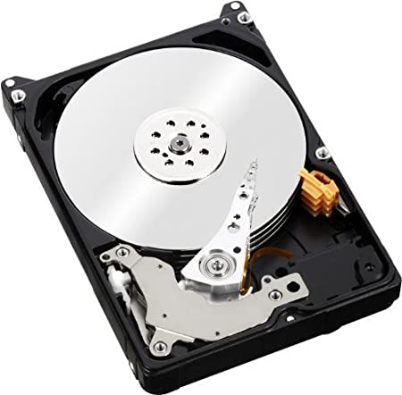
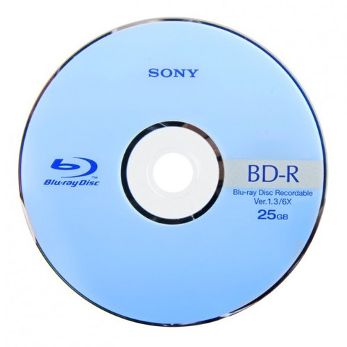

| Storage size | Number of bytes | Number of bytes as power of 10 |
|---|---|---|
| 1 KB | 1,000 bytes | 10^3 bytes |
| 1 MB | 1,000,000 bytes | 10^6 bytes |
| 1 GB | 1,000,000,000 bytes | 10^9 bytes |
| 1 TB | 1,000,000,000,000 byes | 10^12 bytes |
Byte is a term used to measure or memory size. In the table above are the terms kilobytes (kB), megabytes (Mb), gigabytes (GB), and terabytes (TB) all converted into regular bytes.
A fixed internal hard disk (HDD) is usually the main method used for data storage by computers. It is a perfect example of a secondary-type storage, because of how widespread it is. Applications software need a hard drive to help efficiently retrieve and save data.
Optical storage devices are read through the use of laser light, which can also write. The first example that comes to mind is probably a blu-ray disc. The main difference between a dvd and a blu-ray disc is in the name - it uses a blue laser instead of a red one, which means it can store up to 5 time the storage of a red lasered disc.